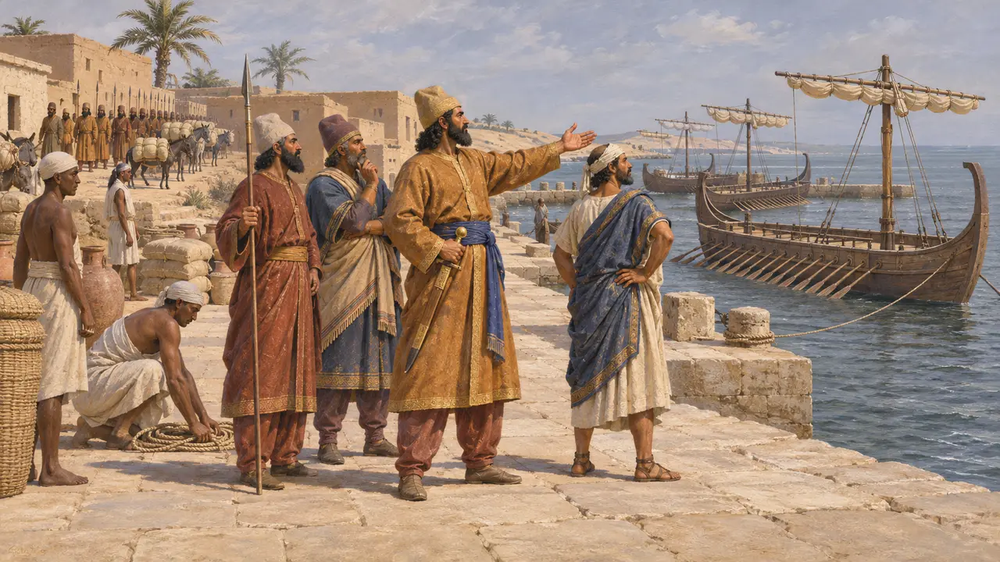
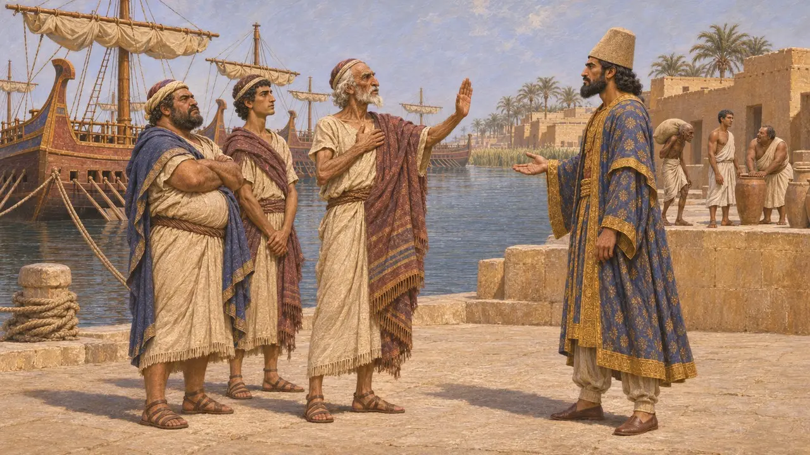
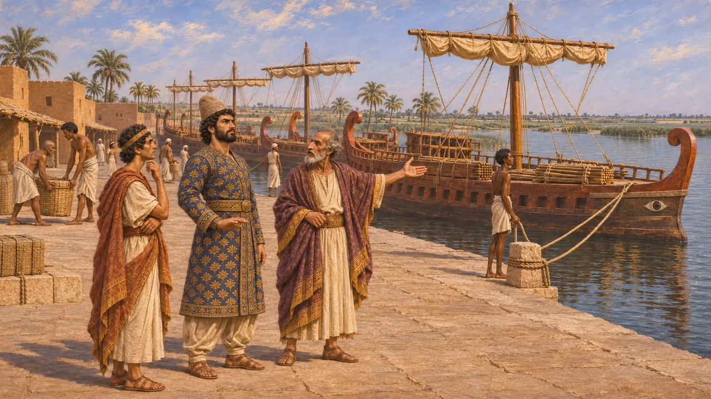
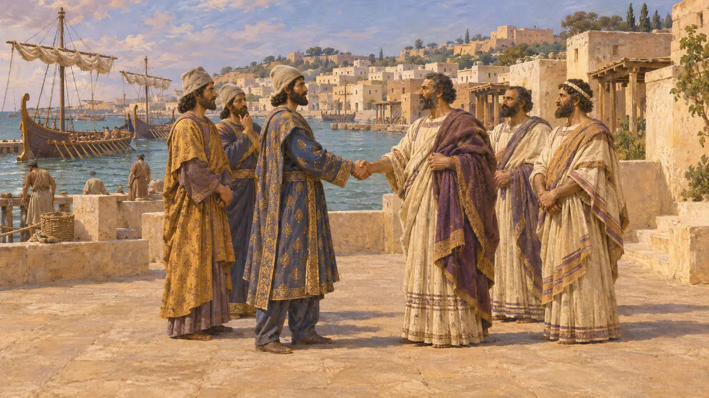

征服埃及之后,冈比西斯计划向西扩张帝国,派遣舰队进攻北非的迦太基。希罗多德说,这一计划之所以落空,是因为构成舰队中坚的腓尼基人拒绝攻打由自己同族人建立的城市。这一事件表明,国王的海上力量在多大程度上依赖于被征服民族的自愿效力。
游戏中： 游戏依照希罗多德的叙述,将此事呈现为公元前524年的事件:腓尼基人拒绝后,冈比西斯放弃了计划。希罗多德并未给出确切年份,因此这一年代是游戏自行选定的。

自埃及筹划的三场远征
古代记述希罗多德说,占领埃及之后,冈比西斯又计划了3场远征:攻打迦太基人,攻打西部沙漠的阿蒙人,以及攻打南方长寿的埃塞俄比亚人。迦太基将由海路进攻,其余两处走陆路。利比亚人以及希腊城邦库列尼和巴尔卡已经向他臣服,通往西方的海岸因此畅通无阻。
Herodotus 3.13; Herodotus 3.17

腓尼基人拒绝
古代记述希罗多德说,腓尼基人拒绝出航,因为他们受誓言约束,而向自己的子孙开战是亵渎神明的行为。按传统说法,迦太基是提尔人建立的城邦。腓尼基人是自愿归附波斯人的,冈比西斯认为不宜强迫他们;而没有他们,其余舰队又过于薄弱,于是这一计划被放弃了。
Herodotus 3.19

这个计划曾经当真吗
争夺中没有任何波斯、埃及或腓尼基文献提到这次远征,因此它只见于希罗多德。一些史家认为,在利比亚与库列涅臣服之后,这是顺理成章的下一步。另一些人怀疑,对一座遥远城市的长途远征是否真被认真筹划过,或怀疑这个故事是为了让冈比西斯在此事上的克制与希罗多德在别处所写的残暴形成对照而编造的。它与腓尼基舰队在波斯海军力量中的核心地位相吻合。
P. Briant, From Cyrus to Alexander, 2002; A. Kuhrt, The Persian Empire, 2007

后世关于波斯与迦太基的传说
后世传说罗马时期的作家还讲述了更多波斯与迦太基往来的故事。查士丁说，大流士派使者前去，禁止迦太基人以活人献祭和食用狗肉，并请求他们协助对付希腊人。狄奥多罗斯则说，薛西斯与迦太基结盟，让它在公元前480年进攻西西里的希腊人。两个故事都出现在事件发生很久以后，许多史学家认为它们是后世的杜撰。
Justin, Epitome of Pompeius Trogus 19.1; Diodorus 11.1
来源
- Herodotus 3.17-19
- Herodotus 3.13
- P. Briant, From Cyrus to Alexander, 2002
- A. Kuhrt, The Persian Empire, 2007
- Justin, Epitome of Pompeius Trogus 19.1
- Diodorus 11.1